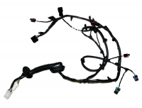
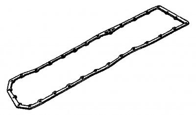

*TAKEOFF* 1999 - 2002 Dodge Viper Left Door Wiring Harness - 04763075AE
Part # 04763075AE
$250.00
Price as of 2026-07-10 archive
Out of stock when archived
Contact to orderor email info@PartsRack.com · 360.837.3937
| Part number | 04763075AE |
|---|---|
| Fits years | 1999-2002 |
| Models | Viper |
| Condition | Takeoff |
| Category | Discontinued Parts, Doors / Related Parts, Electrical |
Description
1999 - 2002 Dodge Viper Left (Driver) Door Wiring Harness
*TAKE OFF*
Mopar Part # 04763075AE
Ships in 2 - 5 business days
NOTE: Gen 3 wiring harness shown, actual harness is for 1999 - 2001 Viper
Archived 2026-07-10 · view original capture
More in Discontinued Parts
 Out of stock
Out of stock2008 - 2010 Viper SRT10 Race Engine Controller - P5155254AB
Part # P5155254AB
$1,375.00
Out of stock
1992 - 1998 Dodge Viper Right Exterior Mirror - 04709432 WHITE
Part # 04709432
$95.00

1996 - 2010 Dodge Viper SRT10 Rear Trailing Link - 04763159AC TOE ROD REAR INNER TIE ROD
Part # 04763159AC
$399.00

1996 - 2002 Dodge Viper Oil Pan Gasket - 05037022AA
$289.99